13 Fronteras
Este lugar fue creado por Dave, un chef norteamericano que recorrió 13 fronteras hasta llegar a Argentina. A partir de cada lugar que recorrió en su travesía creó platos alucinantes, completamente fuera de lo común.
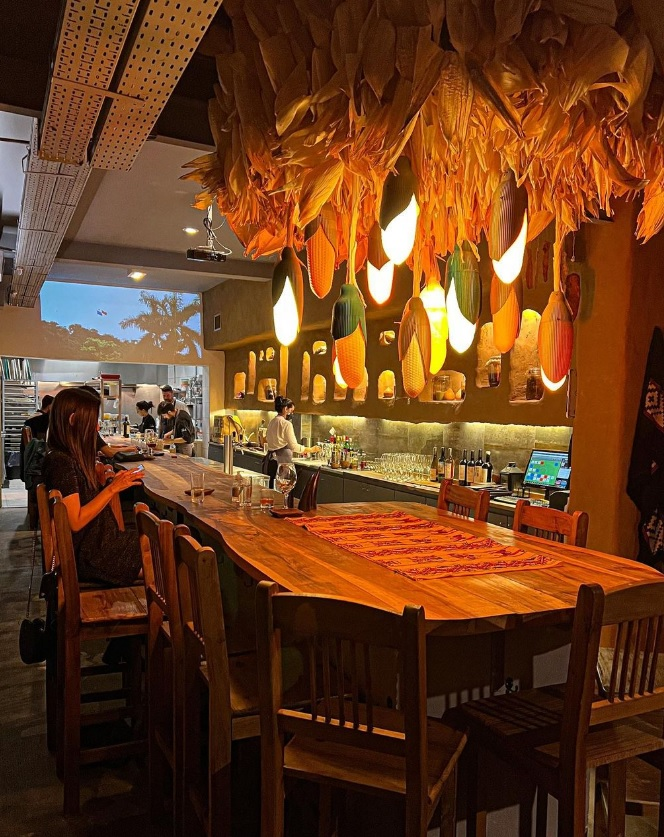 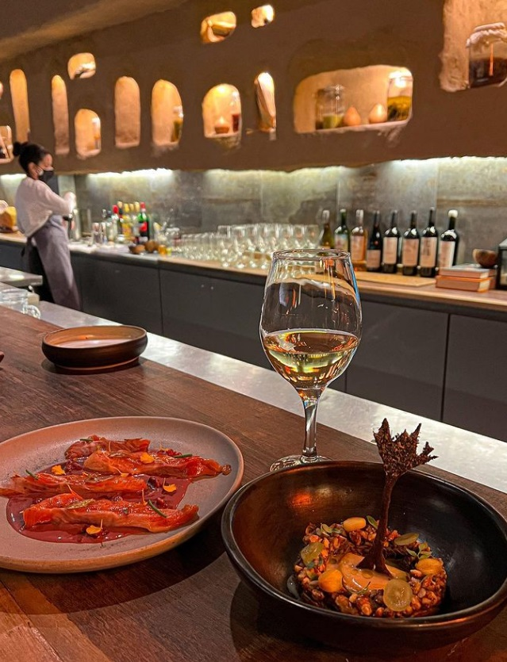 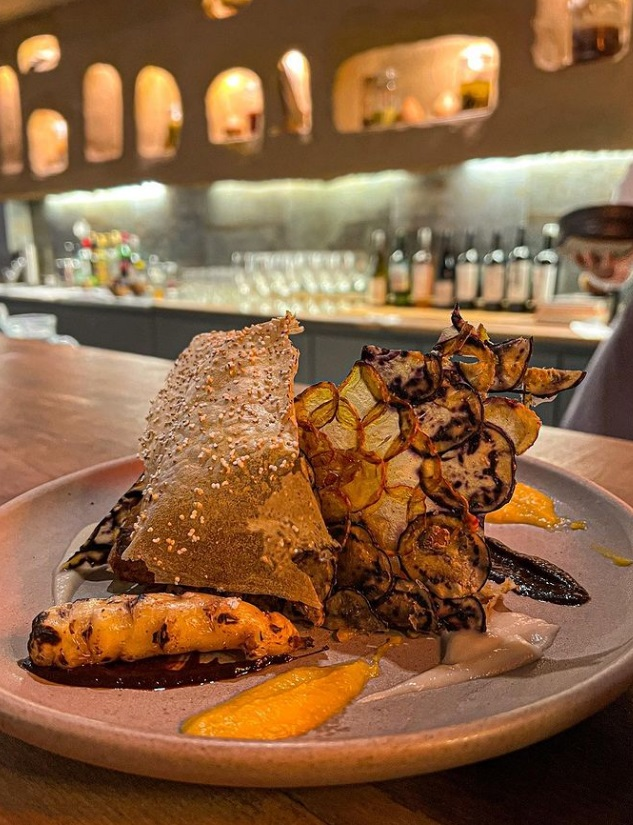Bocabajo Bocarriba
Este pequeño restaurante se encuentra debajo de una lavandería. Los comensales se sientan en una misma mesa y se van conociendo a lo largo de la noche. Cada noche hay una vivencia distinta: Hay noche de tarot y gin, catas de carnes y vinos, etc.
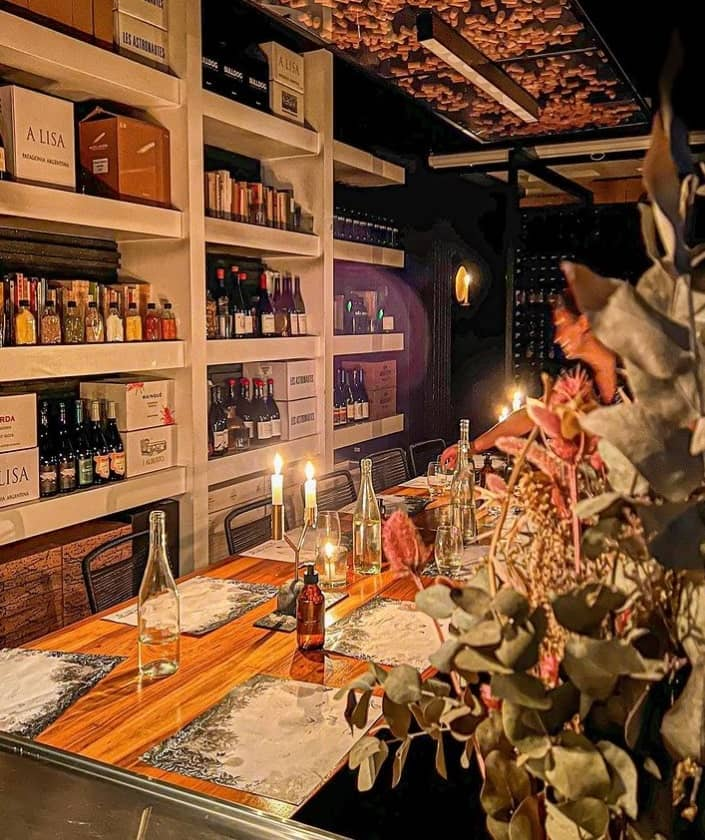 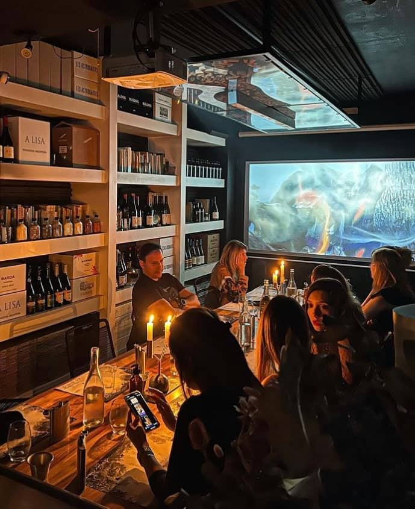 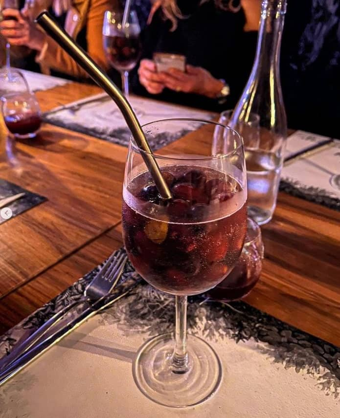Tinta
Lugar super elegante e íntimo en el barrio de Palermo. El espacio cuenta con dos salones principales repartidos en diferentes plantas, un hermoso patio con mucho verde y un salón VIP que desborda de delicadeza.
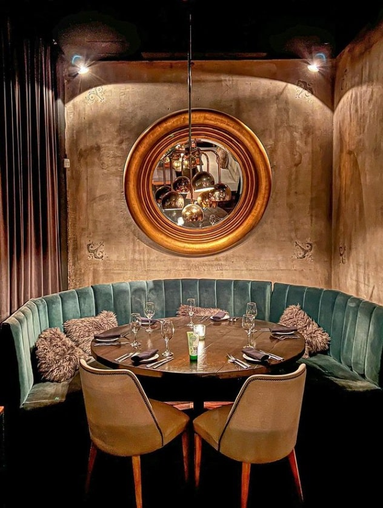 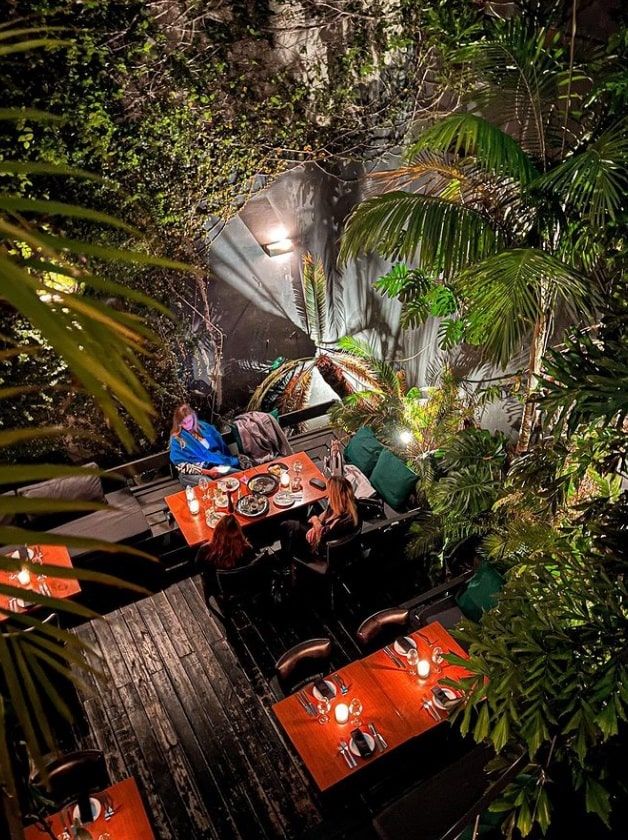 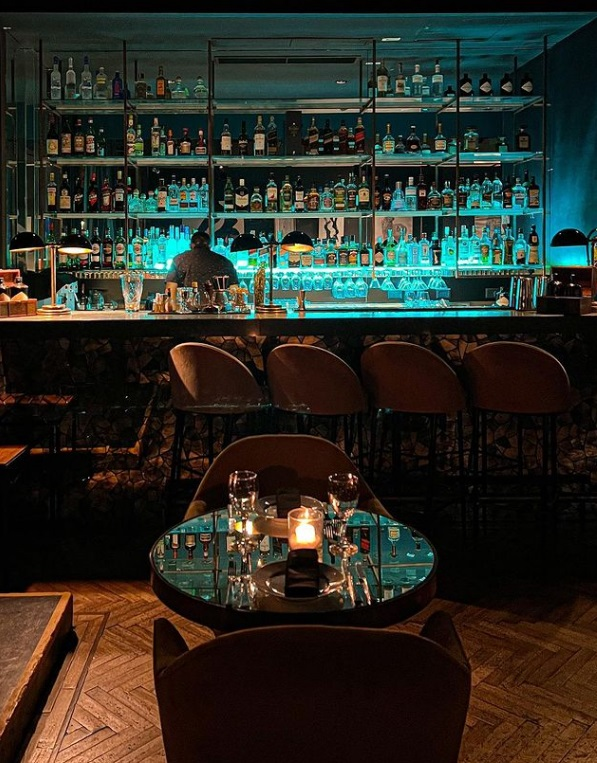Rooftop Plaza de Mayo
Este espacio tiene una de las vistas más privilegiadas de la ciudad. Esta terraza, a diferencia de otras, ofrece actividades culturales y gastronómicas varias: Visitas guiadas, catas, shows, mapping y hasta noches de sushi, solo para nombrar algunos eventos.
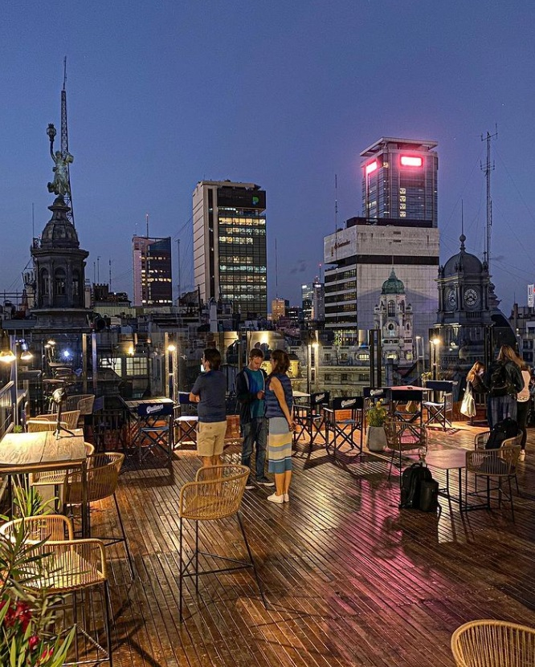 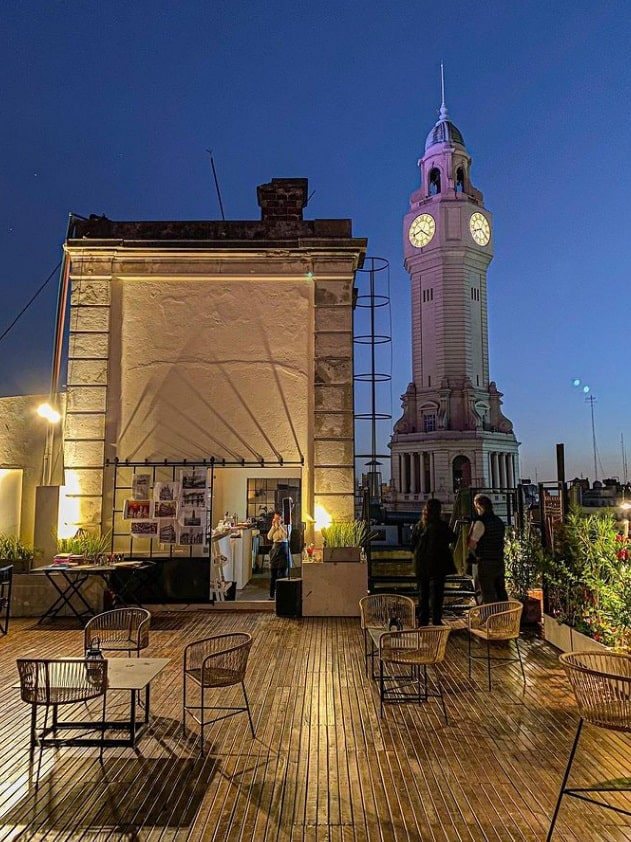 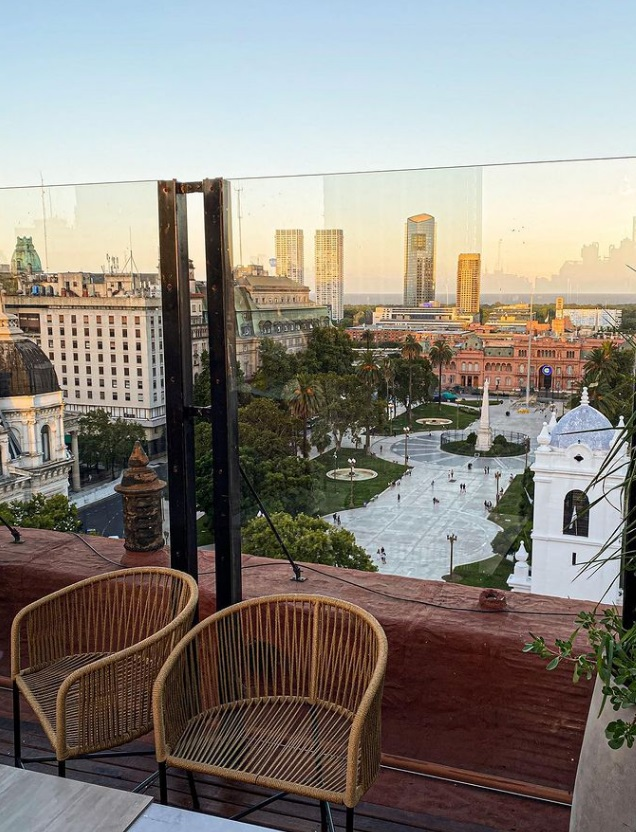